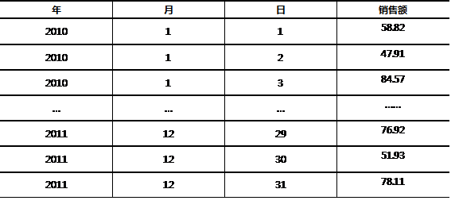

在SELECT查询中，在WHERE查询条件中的限制条件不是一个确定的值，而是来自于另外一个查询的结果。为了给查询提供数据而首先执行的查询语句叫做子查询。
子查询：嵌入在其它SQL语句中的SELECT语句，大部分时候出现在WHERE子句中。子查询嵌入的语句称作主查询或父查询。主查询可以是SELECT语句，也可以是其它类型的语句比如DML或DDL语句。
根据返回结果的不同，子查询可分为单行子查询、多行子查询及多列子查询。
图-1子查询
例如查找和SCOTT同职位的员工：
- SELECT e.ename, e.job
- FROM emp e
- WHERE e.job =
- (SELECT job FROM emp WHERE ename = 'SCOTT')；
查找薪水比整个机构平均薪水高的员工：
- SELECT deptno, ename, sal
- FROM emp e
- WHERE sal> (SELECT AVG(sal) FROM emp);
如果子查询返回多行，主查询中要使用多行比较操作符，包括IN、ALL、ANY。其中ALL和ANY不能单独使用，需要配合单行比较操作符>、>=、<、<=一起使用。例如查询出部门中有SALESMAN但职位不是SALESMAN的员工的信息：
- SELECT empno, ename, job, sal, deptno
- FROM emp
- WHERE deptno IN
- (SELECT deptno FROM emp WHERE job = 'SALESMAN')
- AND job <> 'SALESMAN';
在子查询中需要引用到主查询的字段数据，使用EXISTS关键字。EXISTS后边的子查询至少返回一行数据，则整个条件返回TRUE。如果子查询没有结果，则返回FALSE。例如列出来那些有员工的部门信息：
- SELECT deptno, dname FROM dept d
- WHERE EXISTS
- (SELECT * FROM emp e
- WHERE d.deptno = e.deptno);
子查询不仅可以出现在WHERE子句中，还可以出现在HAVING部分。例如查询列出最低薪水高于部门30的最低薪水的部门信息：
- SELECT deptno, MIN(sal) min_sal
- FROM emp
- GROUP BY deptno
- HAVING MIN(sal) >
- (SELECT MIN(sal) FROM emp WHERE deptno = 30);
在查询语句中，FROM子句用来指定要查询的表。如果要在一个子查询的结果中继续查询，则子查询出现在FROM 子句中，这个子查询也称作行内视图或者匿名视图。这时，把子查询当作视图对待，但视图没有名字，只能在当前的SQL语句中有效。
查询出薪水比本部门平均薪水高的员工信息：
- SELECT e.deptno, e.ename, e.sal
- FROM emp e,
- (SELECT deptno, AVG(sal) avg_sal FROM emp GROUP BY deptno) x
- WHERE e.deptno = x.deptno
- ande.sal>x.avg_sal
- ORDER BY e.deptno;
把子查询放在SELECT子句部分，可以认为是外连接的另一种表现形式，使用更灵活：
- SELECT e.ename, e.sal, e.deptno,
- (SELECT d.deptno FROM dept d
- WHERE d.deptno = e.deptno) deptno
- FROM emp e;
ROWNUM被称作伪列，用于返回标识行数据顺序的数字。例如：
- SELECT ROWNUM, empno, ename, sal
- FROM emp;
ROWNUM只能从1计数，不能从结果集中直接截取。下面的查询语句将没有结果：
- SELECT ROWNUM, empno, ename, sal
- FROM emp
- WHERE rownum> 3;
如果利用ROWNUM截取结果集中的部分数据，需要用到行内视图：
- SELECT * FROM
- (SELECT ROWNUMrn , e.* FROM emp e )
- WHERE rn BETWEEN 8 AND 10;
也就是将ROWNUM先作为行内视图的一个列，在主查询中就可以使用这个列值作为条件。
分页策略是指每次只取一页的数据。当每次换页，取下一页的数据。在ORACLE中利用ROWNUM的功能来进行分页。
假设结果集共105条，每20条分为一页，则共6页：
Page1： 1 至 20
Page2： 21 至40
…
PageN: (n - 1) * pageSize + 1 至 n * pageSize
按薪水倒序排列，取出结果集中第8到第10条的记录：
- SELECT * FROM
- (SELECT ROWNUMrn , t.* FROM
- (SELECT empno,ename,sal FROM emp
- ORDER BY sal DESC) t
- )
- WHERE rn BETWEEN 8 AND 10;
根据要查看的页数，计算起点值（(n - 1) * pageSize + 1）和终点值（n * pageSize），替换掉BETWEEN和AND的参数，即得到当前页的记录。
DECODE函数的语法如下：
DECODE (expr, search1, result1[, search2, result2…][, default])
它用于比较参数expr的值，如果匹配到哪一个search条件，就返回对应的result结果，可以有多组search和result的对应关系，如果任何一个search条件都没有匹配到，则返回最后default的值。default参数是可选的，如果没有提供default参数值，当没有匹配到时，将返回NULL。
查询职员表，根据职员的职位计算奖励金额，当职位分别是’MANAGER’、’ANALYST’、’SALESMAN’时，奖励金额分别是薪水的1.2倍、1.1倍、1.05倍，如果不是这三个职位，则奖励金额取薪水值：
- SELECT ename, job, sal,
- DECODE(job, 'MANAGER', sal * 1.2,
- 'ANALYST', sal * 1.1,
- 'SALESMAN', sal * 1.05,
- sal
- ) bonus
- FROM emp;
和DECODE函数功能相似的有CASE语句，实现类似于if-else的操作。
- SELECT ename, job, sal,
- CASE job WHEN 'MANAGER' THEN sal * 1.2
- WHEN 'ANALYST' THEN sal * 1.1
- WHEN 'SALESMAN' THEN sal * 1.05
- ELSE sal END
- bonus
- FROM emp;
DECODE函数可以按字段内容分组，例如：计算职位的人数，analyst/manager职位属于vip，其余是普通员工operation,这种功能无法用GROUP BY简单实现。用decode的实现方式：
- SELECT DECODE(job, 'ANALYST', 'VIP',
- 'MANAGER', 'VIP',
- 'OPERATION') job,
- COUNT(1) job_cnt
- FROM emp
- GROUP BY DECODE(job, 'ANALYST', 'VIP', 'MANAGER', 'VIP', 'OPERATION');
图-2DECODE函数的运行结果
DECODE函数也可以按字段内容排序，例如：Dept表中按”研发部”、“市场部”、“销售部”排序，用普通的select语句，无法按照字面数据排序：
- SELECT deptno, dname, loc
- FROM dept
- ORDER BY
- DECODE(dname, '研发部',1,'市场部',2,'销售部',3), loc;
ROW_NUMBER语法如下：
- ROW_NUMBER() OVER(
- PARTITION BY col1 ORDER BY col2)
表示根据col1分组，在分组内部根据col2排序。此函数计算的值就表示每组内部排序后的顺序编号，组内连续且唯一。
ROWNUM是伪列， ROW_NUMBER功能更强，可以直接从结果集中取出子集。
场景：按照部门编码分组显示，每组内按职员编码排序，并赋予组内编码
- SELECT deptno, ename, empno,
- ROW_NUMBER()
- OVER (PARTITION BY deptno ORDER BY empno) AS emp_id
- FROM emp;
RANK函数的语法如下：
- RANK() OVER(
- PARTITION BY col1 ORDER BY col2)
表示根据col1分组，在分组内部根据col2给予等级标识，即排名，相同的数据返回相同排名。特点是跳跃排序，如果有相同数据，则排名相同，比如并列第二，则两行数据都标记为2，但下一位将是第四名。
和ROW_NUMBER的区别是有结果有重复值，而ROW_NUMBER没有。
场景：按照部门编码分组，同组内按薪水倒序排序，相同薪水则按奖金数正序排序，并给予组内等级，用Rank_ID表示
- SELECT deptno, ename, sal, comm,
- RANK() OVER (PARTITION BY deptno
- ORDER BY sal DESC, comm) "Rank_ID"
- FROM emp；
DENSE_RANK函数的语法如下：
- DENSE_RANK() OVER(
- PARTITION BY col1 ORDER BY col2)
表示根据col1分组，在分组内部根据col2给予等级标识，即排名，相同的数据返回相同排名。特点是连续排序，如果有并列第二，下一个排序将是三，这一点是和RANK的不同，RANK是跳跃排序。
场景：关联emp和dept表，按照部门编码分组，每组内按照员工薪水排序，列出员工的部门名字、姓名和薪水：
- SELECT d.dname, e.ename, e.sal,
- DENSE_RANK()
- OVER (PARTITION BY e.deptno ORDER BY e.sal)
- AS drank
- FROM emp e join dept d
- one.deptno = d.deptno;
ROLLUP、CUBE 和 GROUPING SETS 运算符是 GROUP BY 子句的扩展，可以生成与使用 UNION ALL 来组合单个分组查询时相同的结果集，用来简化和高效的实现统计查询。语法形式如下：
假设有表test，有a、b、c、d四个列。
- SELECT a,b,c,SUM(d) FROM test GROUP BY ROLLUP(a,b,c);
等价于：
- SELECT a,b,c,SUM(d) FROM test GROUP BY a,b,c
- UNION ALL
- SELECT a,b,null,SUM(d) FROM test GROUP BY a,b
- UNION ALL
- SELECT a,null,null,SUM(d) FROM test GROUP BY a
- UNION ALL
- SELECT null,null,null,sum(d) FROM test;
对ROLLUP的列从右到左以一次少一列的方式进行分组直到所有列都去掉后的分组(也就是全表分组)。对于n个参数的ROLLUP，有n+1次分组。
表－1 数据样例表
准备数据：
- SQL>DROP TABLE sales_tab;
- SQL>CREATE TABLE sales_tab (
- year_id NUMBER NOT NULL,
- month_id NUMBER NOT NULL,
- day_id NUMBER NOT NULL,
- sales_value NUMBER(10,2) NOT NULL
- );
- SQL>INSERT INTO sales_tab
- SELECT TRUNC(DBMS_RANDOM.value(low => 2010, high => 2012)) AS year_id,
- TRUNC(DBMS_RANDOM.value(low => 1, high => 13)) AS month_id,
- TRUNC(DBMS_RANDOM.value(low => 1, high => 32)) AS day_id,
- ROUND(DBMS_RANDOM.value(low => 1, high => 100), 2) AS sales_value
- FROM dual
- CONNECT BY level <= 1000;
- SQL>COMMIT;
复习组函数的用法：
- SQL>SELECT SUM(sales_value) AS sales_value FROM sales_tab;
- SQL>SELECT year_id, COUNT(*) AS num_rows,
- SUM(sales_value) AS sales_value
- FROM sales_tab
- GROUP BY year_id
- ORDER BY year_id;
- SQL>SELECT year_id, month_id,
- COUNT(*) AS num_rows,
- SUM(sales_value) AS sales_value
- FROM sales_tab
- GROUP BY year_id, month_id
- ORDER BY year_id, month_id;
图-3 在测试表中使用组函数的运行结果
图-4 在测试表中使用组函数的运行结果
ROLLUP函数的用法：
- SELECT year_id, month_id,
- SUM(sales_value) AS sales_value
- FROM sales_tab
- GROUP BY
- ROLLUP (year_id, month_id)
- ORDER BY year_id, month_id;
图-5 在测试表中使用ROLLUP函数的运行结果
- SELECT year_id, month_id, day_id, SUM(sales_value) AS sales_value
- FROM sales_tab
- GROUP BY ROLLUP (year_id, month_id, day_id)
- ORDER BY year_id, month_id, day_id;
图-6 在测试表中使用ROLLUP函数的运行结果
CUBE函数的语法形式：
- GROUP BY CUBE(a, b, c)
对cube的每个参数，都可以理解为取值为参与分组和不参与分组两个值的一个维度，所有维度取值组合的集合就是分组后的集合。对于n个参数的cube，有2^n次分组。
如果GROUP BY CUBE(a,b,c)，首先对(a,b,c)进行GROUP BY，然后依次是(a,b)，(a,c)，(a)，(b,c)，(b)，(c)，最后对全表进行GROUP BY操作，所以一共是2^3=8次分组。
- SELECT a,b,c,SUM(d) FROM test GROUP BY CUBE(a,b,c);
等价于：
- SELECT a,b,c,SUM(d) FROM test GROUP BY a,b,c
- UNION ALL
- SELECT a,b,NULL,SUM(d) FROM test GROUP BY a,b
- UNION ALL
- SELECT a,NULL,c,SUM(d) FROM test GROUP BY a,c
- UNION ALL
- SELECT a,NULL,NULL,SUM(d) FROM test GROUP BY a
- UNION ALL
- SELECT NULL,b,c,SUM(d) FROM test GROUP BY b,c
- UNION ALL
- SELECT NULL,b,NULL,SUM(d) FROM test GROUP BY b
- UNION ALL
- SELECT NULL,NULL,c,SUM(d) FROM test GROUP BY c
- UNION ALL
- SELECT NULL,NULL,NULL,SUM(d) FROM test ;
等价于只是方便理解，其内部运行机制并不相同，其效率远高于UNION ALL。
在sales_value表中使用cube函数：
- SELECT year_id, month_id,
- SUM(sales_value) AS sales_value
- FROM sales_tab
- GROUP BY CUBE (year_id, month_id)
- ORDER BY year_id, month_id;
图-7在测试表中使用CUBE函数的运行结果
- SELECT year_id, month_id, day_id,
- SUM(sales_value) AS sales_value
- FROM sales_tab
- GROUP BY CUBE (year_id, month_id, day_id)
- ORDER BY year_id, month_id, day_id;
GROUPING SETS 运算符可以生成与使用单个 GROUP BY、ROLLUP 或 CUBE 运算符所生成的结果集相同的结果集，但是使用更灵活。
如果不需要获得由完备的 ROLLUP 或 CUBE 运算符生成的全部分组，则可以使用 GROUPING SETS 仅指定所需的分组。GROUPING SETS 列表可以包含重复的分组。
GROUPING SETS示例：
- SELECT year_id, month_id, SUM(sales_value)
- FROM sales_tab
- GROUP BY CUBE (year_id,month_id)
- order by 1, 2;
- SELECT year_id, month_id, SUM(sales_value)
- FROM sales_tab
- GROUP BY GROUPING SETS ( (year_id), (month_id))
- order by 1, 2
其中分组方式示例如下：
图-8 集合操作
为了合并多个SELECT语句的结果，可以使用集合操作符，实现集合的并、交、差。
集合操作符包括UNION、UNION ALL、INTERSECT和MINUS。多条作集合操作的SELECT语句的列的个数和数据类型必须匹配。
ORDER BY子句只能放在最后的一个查询语句中。
集合操作的语法如下：
- SELECT statement1
- [UNION | UNION ALL | INTERSECT | MINUS]
- SELECT statement2;
UNION和UNION ALL用来获取两个或两个以上结果集的并集：
例如，合并职位是’MANAGER’的员工和薪水大于2500的员工集合，查看两种方式的结果差别：
- --Union
- SELECT ename, job, sal FROM emp
- WHERE job = 'MANAGER'
- SELECT ename, job, sal FROM emp
- WHERE sal> 2500;
- --Union all
- SELECT ename, job, sal FROM emp
- WHERE job = 'MANAGER'
- SELECT ename, job, sal FROM emp
- WHERE sal> 2500;
INTERSECT函数获得两个结果集的交集，只有同时存在于两个结果集中的数据，才被显示输出。使用INTERSECT操作符后的结果集会以第一列的数据作升序排列。
例如：显示职位是’MANAGER’的员工和薪水大于2500的员工的交集：
- SELECT ename, job, sal FROM emp
- WHERE job = 'MANAGER'
- INTERSECT
- SELECT ename, job, sal FROM emp
- WHERE sal> 2500;
MINUS函数获取两个结果集的差集。只有在第一个结果集中存在，在第二个结果集中不存在的数据，才能够被显示出来。也就是结果集一减去结果集二的结果。
例如：列出职位是MANAGER但薪水低于2500的员工记录：
- SELECT ename, job, sal FROM emp
- WHERE job = 'MANAGER'
- MINUS
- SELECT ename, job, sal FROM emp
- WHERE sal> 2500;